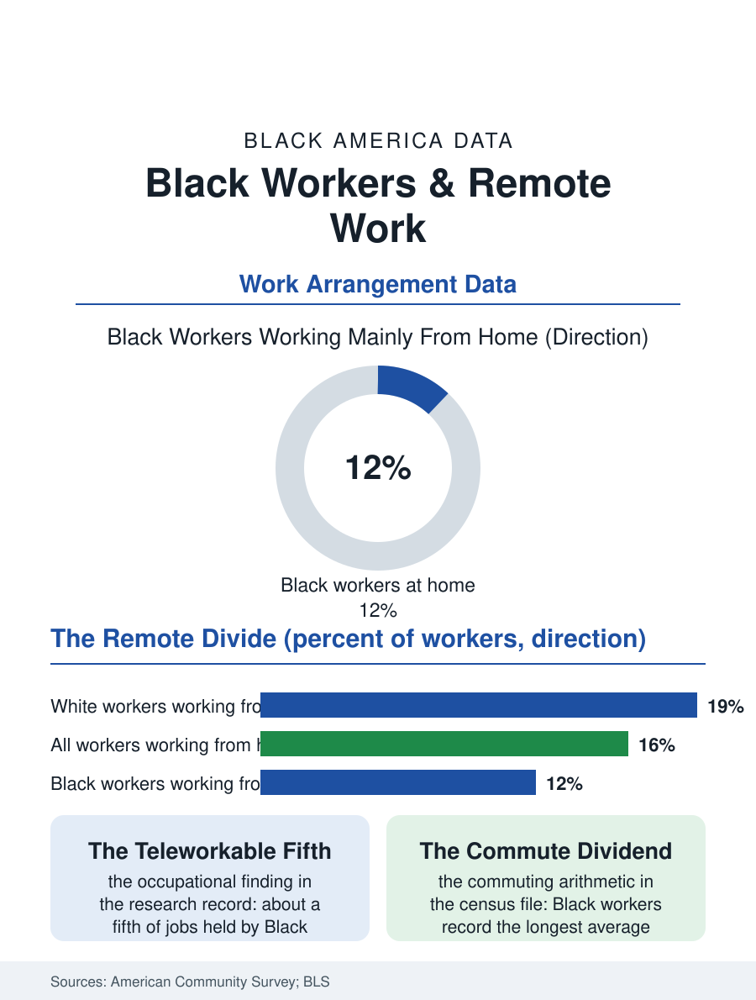

Black Employment
The Laptop Divide: Black Workers and Remote Work
The jobs that can be done from a laptop are not the jobs Black workers mostly hold, and the newest workplace divide follows the oldest occupational lines. The remote-work file.

When the office emptied in 2020, it did not empty evenly. The ability to work from home is an occupational privilege, distributed by the same sorting that distributes pay, and Black workers, concentrated in the in-person economy of care, logistics, retail, and food, hold jobs that can be done from home at rates well below white workers in the federal counts. This article reads the remote-work file, a map of the newest workplace divide.
The Teleworkability Map
Researchers scored occupations by whether their tasks can be performed at home, and the resulting map is the file's foundation: roughly a third or more of white workers' jobs score as teleworkable, against about a fifth of Black workers' jobs, with the gap explained almost entirely by occupational distribution rather than by anything employers decide worker by worker. Management, finance, technology, and professional services sit at the remote end; the sectors where Black employment concentrates sit at the other. The American Community Survey began asking the question directly, and its post-pandemic counts confirmed the modeled map with real commutes: the share of Black workers working mainly from home settled in the low teens as offices stabilized, against a share roughly half again higher for white workers. Geography compounds it. Remote work clusters in the expensive coastal and tech metros, while the Black workforce is weighted toward the South, where remote adoption by employers runs lower, and toward the public sector, whose return-to-office mandates have been among the strictest. Within identical occupations a smaller residual gap persists in the surveys, attributed to seniority, manager discretion, and the negotiation dynamics the workplace literature keeps documenting.
What Remote Work Is Worth
The value at stake is larger than the commute. Economists valuing the remote benefit in wage terms find workers treat days at home as worth a meaningful percentage of pay, and the flexibility itself, control over the hours around the edges of the day, is the benefit parents and caregivers name first. For Black households the arithmetic has specific entries: commuting time in the census file runs longest for Black workers, so the remote day returns more time; vehicle and transit costs consume a documented larger share of Black household budgets, so the remote day returns more money; and the caregivers, disproportionately Black grandmothers and mothers in the household files, gain the schedule slack that paid care would otherwise consume. Set against this is the proximity file: studies of promotion and visibility find fully remote workers, and especially those remote while their peers are present, advancing more slowly, receiving less mentorship, and appearing less often in the sponsorship conversations where careers are actually made. Black professionals describe the resulting calculation with precision in the survey literature, the home office as refuge from the daily friction of being the only one, weighed against the career tax of being the absent one.
The Hybrid Settlement
The arrangement stabilizing across the data is hybrid, two or three days in, and the file's current research question is whether hybrid narrows or hardens the divide. The in-person tier's conditions become the policy frontier: scheduling predictability, transit access, and the wage premium, if any, that hands-on work comes to command as its labor pool thins. Some employers in tight in-person labor markets have begun paying that premium openly, a shift the wage data are starting to register in logistics and care. The forward indicators to watch sit in the same surveys: telework rates by occupation and race in the ACS, the return-to-office terms in public-sector contracts, and the promotion-rate studies as hybrid cohorts age. The remote-work file closes on the observation its map makes unavoidable. The twentieth century's workplace divide ran between the factory and the office; the twenty-first century's runs between the laptop and the floor, and it was drawn, as the occupational data show, along lines laid down long before anyone had heard of a video call. Whether the settlement pays the floor what the laptop is worth is the question the next decade of this file will answer.
One more entry in the ledger is generational. The workers entering now, Black graduates among them, rank flexibility near the top of what they negotiate for, and the employers competing for credentialed Black talent in technology, finance, and health administration have learned to price remote days into their offers. The divide, in other words, is not only between occupations but between the workers each occupation can attract and keep, which means the remote gap compounds quietly into a recruitment gap, year over year, in the sectors where the next decade's Black professional class will be built.
More in Black Employment
The Black Unemployment Rate: The Two-to-One Pattern
Black unemployment runs at roughly twice the White rate — 5.5 percent against 3.3 percent in annual averages — a ratio stable across five decades of federal data. How it is measured and why it persists.
Black Median Weekly Earnings: The 80-Cent Ratio
Black full-time workers earn a median of about $900 a week — roughly 80 cents for every dollar White workers earn. The BLS earnings data by group, gender, and occupation.
Black Labor Force Participation: Working at National Rates
Black labor force participation runs at roughly the national rate — and Black women participate at higher rates than White women. The BLS participation data.
Source: U.S. Census Bureau, American Community Survey work-from-home data; Bureau of Labor Statistics telework supplements; occupation teleworkability research.